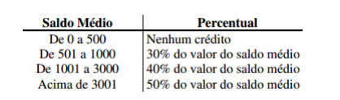

A CEF concederá um crédito especial com juros de 2% aos seus clientes de acordo com o saldo médio no último ano. Fazer um programa em JavaScript que leia o saldo médio de um cliente e calcule o valor do crédito de acordo com a tabela a seguir. Imprimir uma mensagem informando o saldo médio e o valor de crédito.
